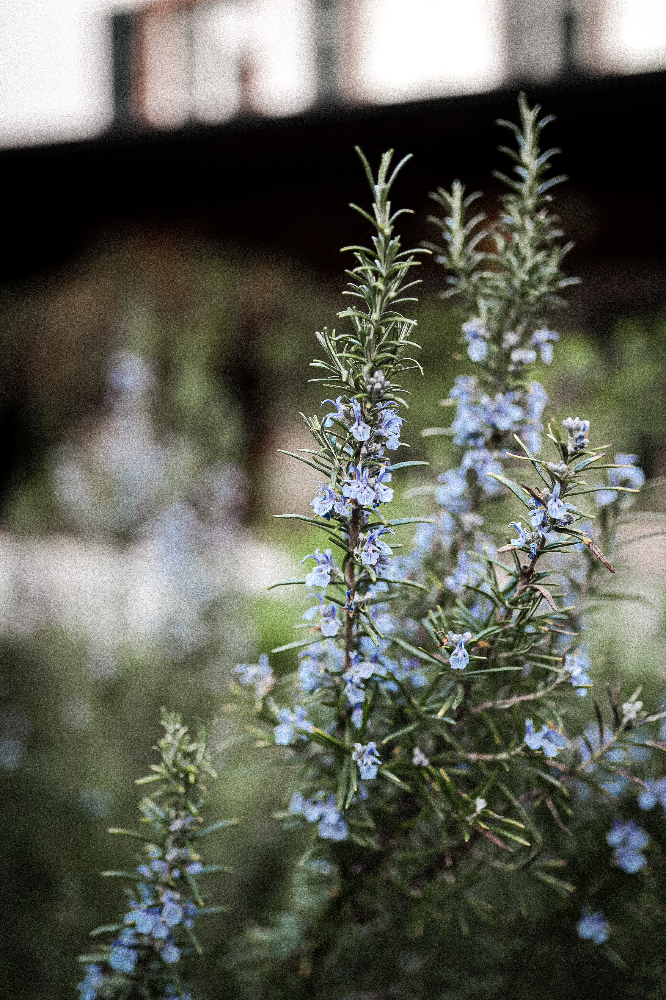

꿀풀과에 속하는 다년생 식물 '로즈메리'는 이름에서 연상되는 바와 달리 장미도 아니고
성모마리아와도 직접적인 관계가 없다. 지중해 연안 해변에 자생하기 때문에
'바다의 이슬'을 의미하는 라틴어 'ros marinun'에서 따온 이름이다.
로마인들은 장례식이나 종교의식 또는 귀한 손님을 맞는 연회를 벌일 때 로즈메리로 화관을
만들었다. 로즈메리를 태운 연기로 가축을 정하하기도 했다. 또한 그들은 로즈메리의
독특한 향기에 시체가 썩지 않도록 보존하는 힘이 있다고 믿었다.
푸른 잎은 불멸의 상징이었다. 그런 이유로 무덤가에 많이 심었다. 잉글랜드 북부에도
장례식 때 관 위로 로즈메리를 던져 주는 전통이 있다.
소녀들은 로즈메리로 미래를 점칠 수 있다. 막달라 마리아 축일(7월22일) 전날 밤,
젖빛 유리잔에 와인, 럼주, 진, 식초ㅡㄹ 탄 물을 담고 로즈메리 잔가지를 적신다.
한 소녀가 이 과정을 수행하는 동안 만 21세가 넘지 않은 다른 소녀 둘이 지켜보아야 한다.
소녀들은 가지를 가슴 속에 단단히 품은 채로 용액을 딱 세모금씩 마신다.
그런 다음 셋이 한 침대에 누워 잠을 청한다.
침대에 들어간 다음에는 한마디도 해서는 안 된다. 그러면 궁금했던 미래가 꿈속에 펼쳐질 것이다.
